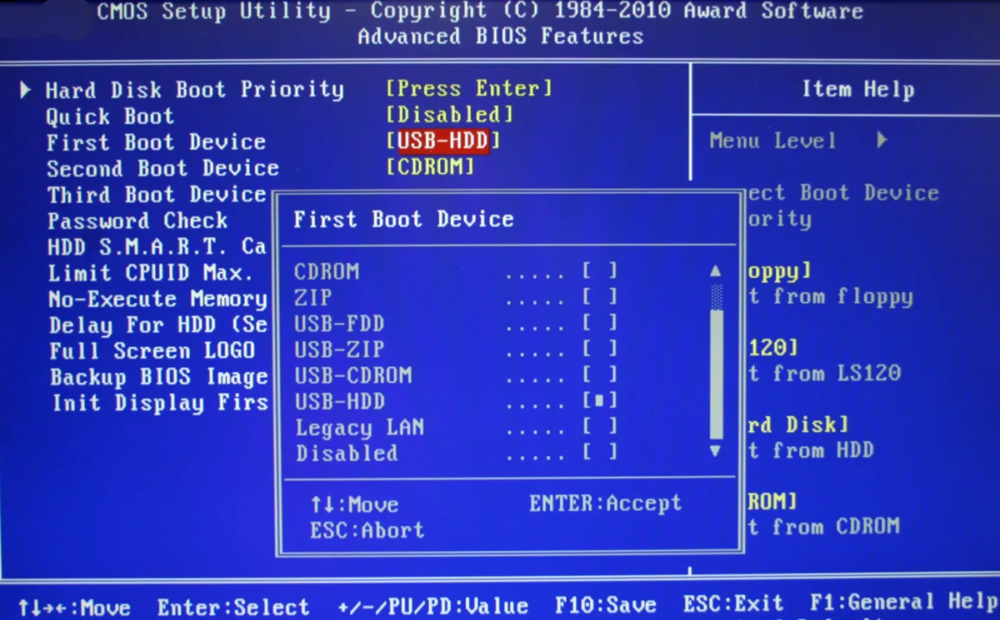
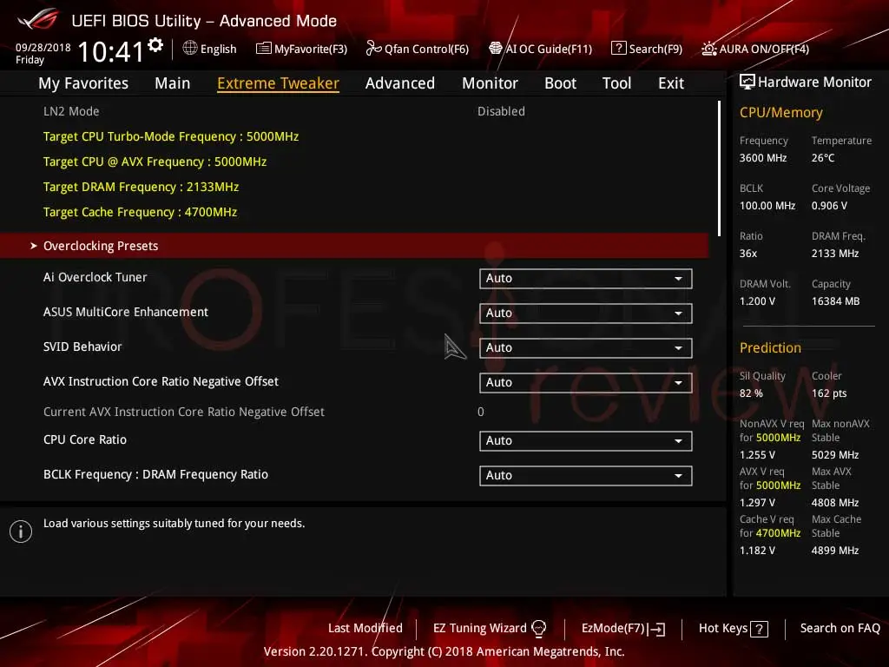

Key BIOS concepts
-
POST: Power-On Self Test
One of the functions performed by the BIOS is the POST, a series of diagnostic tests that serve to verify that the computer's hardware is functioning correctly before loading the operating system.
This process checks the input and output components and configures and diagnoses the hardware's status. If something goes wrong during this process, the computer will not turn on and will display an error message.
This process is generally not visible during most startups, but it can be activated to detect potential errors. -
BIOS Setup
Configuring the BIOS depends on the computer; you'll need to use different keys when turning it on. This will take you to an interface, currently UEFI, a newer system that differs slightly from the BIOS but performs a similar function. Among other things, you can configure the system date and time, the boot order, security options, and more.
-
Boot order
The boot order is a configurable BIOS option that determines the order in which the devices from which the computer starts are controlled, i.e., a hard drive, a USB drive, an optical drive, etc.
The default UEFI order is:- Operating system boot manager
- USB drive
- USB drive, CD or DVD
- Network adapter
-
Legacy
UEFI
